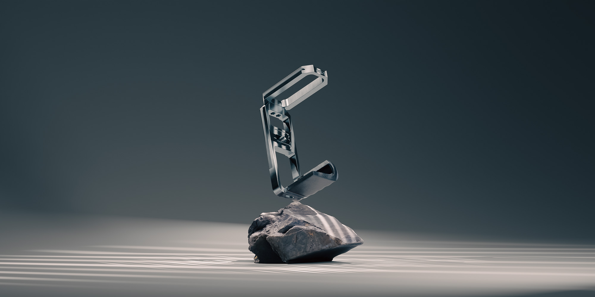
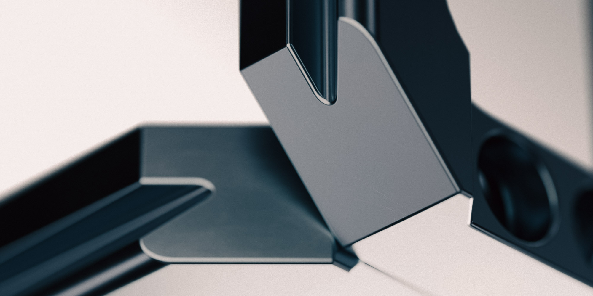
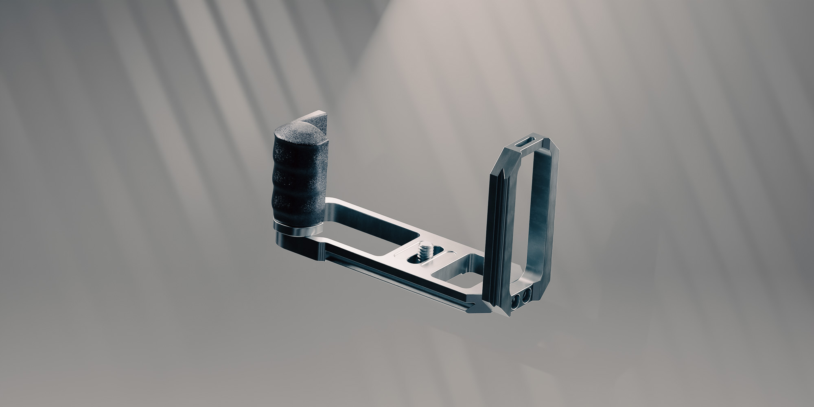
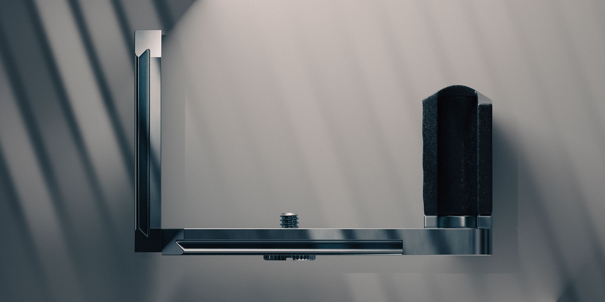
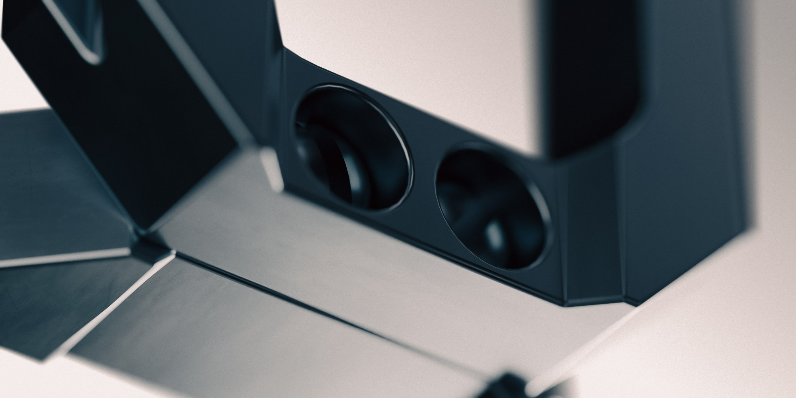
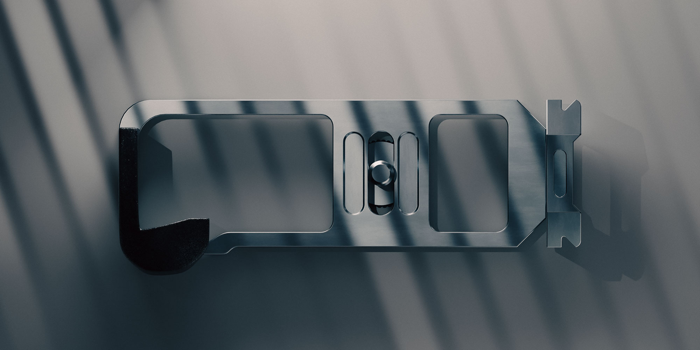
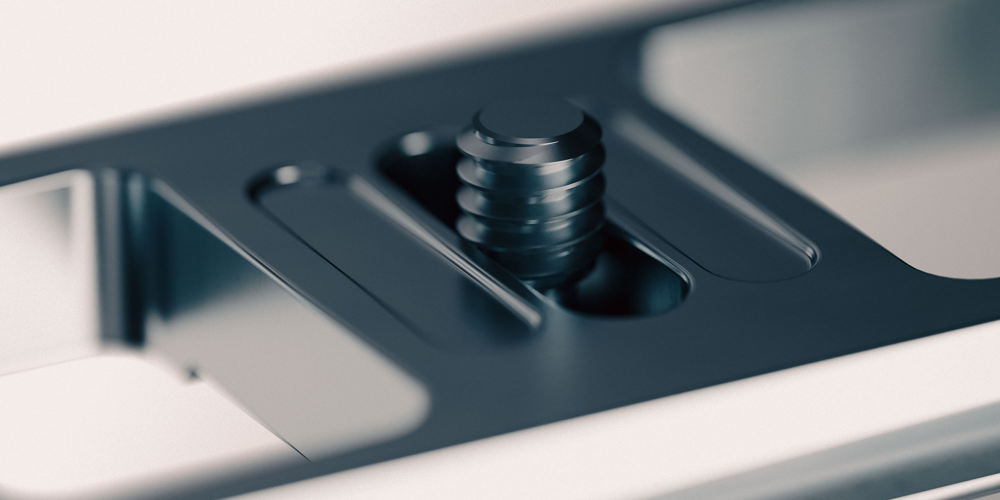
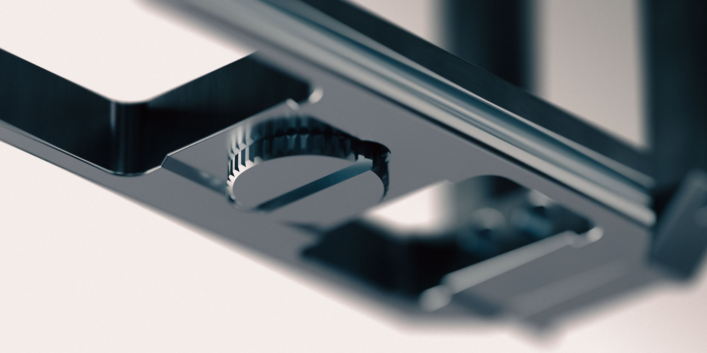

EOS M CAGE
OVERVIEW
Fusion360 / Blender / After Effects - 2025
This sleek concept camera cage was made for the Canon EOS M in Autodesk Fusion360. Camera cages are a way of attaching accessories to cameras such as extra grips, mic holders, external monitors, drives & batteries. There is currently no existing cage for the Canon EOS M that is made of high-quality metal. The model below, however, is a concept design of my own that could be machined or cast. The model was drafted in Fusion360 to spec using a 3D photogrammetry scan of the camera to double-check alignment. The model was made in Fusion360, while renders were made in Blender using cycles.







